X. BÖLÜM
ANTİK UYGARLIKLAR ARASINDA KUZEY AMERİKA’NIN YERİ
Günümüzde, hem sıradan insanlar hem bilim insanları için en ilginç sorulardan ikisi şunlar: İnsan dünya üzerinde ilk kez nerede ortaya çıktı? Ortaya çıkışı ne zaman, ne kadar süre önce gerçekleşti? Bu sorulardan ilkini cevaplayabilir ve bu konuda yazılı belgeler, tarihi harabeler üzerindeki yazıtlar, gelenekler ve jeolojik fenomenlerden oluşan akla yatkın kanıtlar sunabilirim.
İkinci soru şimdi cevaplanamaz, muhtemelen hiçbir zaman da cevaplanamayacak, çünkü bir zamanlar yazılmış tüm belgeler ve kanıtlar şimdi en derin okyanuslarımızdan birinin dibinde yatıyor. Yine de bir ihtimal var, antik Hindistan’ın Rishi şehirlerinin tapınaklarından biri gün ışığına çıkarılırsa Yedi Kutsal İlhamlı Mu Metni’nin eksiksiz nüshaları bulunabilir. Yedinci metin veya bölüm hikâyeyi anlatıyor ve insanın, dünya üzerinde ortaya çıkışından itibaren tarihçesini sunuyor.
Elimizde insanın dünyada ilk önce Cennet Bahçesi’nde ortaya çıktığını söyleyen Kitabı Mukaddes’ten bir bölüm var ama Cennet Bahçesi’nin nerede olduğu konusunda anlaşabilmiş iki otorite bulmak mümkün değil. Ben ise Kitabı Mukaddes’teki Cennet Bahçesi’nin; Mısırlıların Batı Toprakları, Mayaların Kui Diyarı ve Hintlilerin anayurdu olduğu iddiamı sürdürüyorum. Tüm bu yerlerin hiyeratik isimleri, Mu Ülkesi idi.
Şimdi dünya üzerinde antik insanın izini takip edecek ve her ülkede arkasında bıraktığı yazılı kayıtlar yardımıyla, hiçbir belirsizliğe yer bırakmadan Mu’nun coğrafi konumunu ortaya koyacağım. Başlangıç yapacağım yer Kuzey Amerika, zira Kuzey Amerika ve Doğu Asya, insanoğlunun anayurttan uzakta kurduğu ilk yerleşimlerdi.
Hem Avrupa hem Amerika’daki bilim insanları, Neanderthal, Piltdown ve Heidelberg adamı gibi birkaç eski insan kemiği bulmanın heyecanıyla, Kuzey Amerika’daki antik insan kalıntılarını tamamen göz ardı ettiler. Birçok antik metinden anlaşıldığı kadarıyla ölülerin yakılması, bedenleri ortadan kaldırmanın en sık uygulanan yöntemiydi. Bu sebeple, kemikleri yanıp küle dönenlerden geriye hiçbir iz kalmamıştı. İnsanın kemikleri ulaştığı medeniyet seviyesini veya nasıl bir hayat yaşadığını göstermeye yetmiyor. Bunları gösteren ne ürettikleridir. Kuzey Amerika’da bulunan antik insan kemikleri az sayıda olsa da insanın burada başardığı işler böyle değil. Avrupa’da keşfedilen antik insan kemiklerine heyecanla yaklaşan tüm bilim insanları, bunların Pleistosen’e veya jeolojik Buzul Çağı’na ait olduğu konusunda hemfikir.
Avrupa’da bulunan bu ilkel insanlar ortaya çıkmadan on binlerce yıl önce, Kuzey Amerikalılar oldukça uygar, sanat ve bilim konularında uzmanlaşmış insanlardı. Mısır’ın uygarlığın anası olduğu iddiası Mısır hakkında büyük bir bilimsel gümbürtü yarattı, oysa sayısız antik metin bize Mısır toprağına ilk ayak basanların Amerika ve Hindistan’dan gelen göçmenler olduğunu ve bunların yanlarında “Anayurdun bilim ve medeniyetini getirdiklerini” söylüyor. Bu belgelerin çoğu da antik Mısırlılar tarafından yazılmış bulunuyor. Schliemann’ın gösterdiği gibi büyük Mısır medeniyeti, anayurdun desteği ortadan kalktığında zayıf düştü.
Evrim teorisi artık bilim insanlarımız tarafından kabul görüyor. Bu, Kutsal ve İlhamlı Mu Metinleri karşısında savunulması imkânsız bir fikir. Bu metinler bize yaşamın ne olduğunu, nasıl ortaya çıktığını ve onu idare ettiren kuvvetleri anlatıyor. 50 bin yıldan daha uzun süre önce yazılmış olsa da bu metinler bilim insanlarının elektron adını verdiği kuvvetin doğasını, kökenini, nasıl işlediğini, ne yaptığını ve dağılımını bize açıklıyor.
Kuzey Amerika’da yaşamış son derece uygar insanların, tarihi Üçüncü Devir’e uzanan ve Buzul Çağı’ndan on binlerce yıl önceye ait kalıntıları mevcut. Mısır’ın Kutsal Gizemleri bize Buzul Çağı denilen devrin ne olduğunu, buna neyin sebep verdiğini anlatıyor ve bu konuyla ilgili her şeyin bilimsel tanımını yapıyor.
Kuzey Amerika’da bulunan insan kalıntılarının çoğu, batımızdaki büyük dağ sıralarının görkemli başlarını çayırların üzerinde kaldırmalarından önceki bir zamana ait. Batı eyaletlerimizde, Uçurum Sakinleri ve Kızılderililerden önce bu bölgede yaşamış, izi sürülebilen dört insan medeniyeti bulunuyor.
Uçurum Sakinleri’nin ve Kızılderililerin, dağların yükselişi sırasında sağ kalanların soyundan gelen ırklar olması ihtimali oldukça büyük. Bu dört medeniyet, farklı yazı tipleri ve evlerinden geriye kalanlarla ayırt ediliyor. Kayalara ve uçurumların yamaçlarına yazılmış bu yazılar, bize bunları yazan halkın ölümsüz bir tarihçesini sunuyor. Doğru, bu eksik bir tarihçe, fakat bize nereden, nasıl geldiklerini; dinlerini ve başarılarını anlatmak için yeterli.
Hiyeratik bir alfabeden ve bir sembol sistemi veya resim yazısından oluşan bu yazıların anahtarı anayurttan geliyor. Alfabeyi harfler yerine resimler oluşturuyor. Anahtarların yardımı ve kullanılan dil hakkında bilgiyle bu resimlerin anlamını ortaya çıkarmak kolay.
Aşağıdakiler Kuzey Amerika medeniyetlerinin en göze çarpanlarından birkaçı:
Oregon: Oregon’da Fosil Gölü olarak bilinen yerde çok antik bir medeniyetin kalıntıları gün yüzüne çıkarıldı. Fosil Gölü antik bir su kütlesinin kurumuş yatağı. Burada bulunan tarih öncesi hayvan kalıntılarından, gölün Mezozoik Zaman’da var olduğu kanıtlanmış durumda.
Fosil Gölü, bir zamanlar verimli çayırlardan oluşmasına rağmen dağların yükselerek yüzey sularının yerini değiştirmesi sonucu kuraklaşan büyük Oregon Çölü’nün ortasında yer alıyor. Gölün kurumuş yatağının etrafında antik hayvan fosilleri keşfedildi. Alt tabakada dinozor ve diğer Mezozoik hayvanların, üstte ise mastodon ve Pleistosen Çağ’ın memeli hayatına ait fosiller bulundu. Mastodon kemikleri arasında volkanik taştan yapılma ok ve mızrak başları vardı.
Nevada: Kuzey Amerika antik insanına ait en değerli veri-
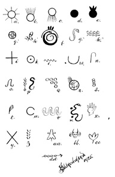
Uçurum Sakinleri’ne Ait Yazılarda Bulunan Semboller
ler arkeologların bu eyaletteki araştırmaları sonucu elde edildi. Batı eyaletlerimizin kayaları ve uçurumlarında, semboller, hiyeratik harfler ve desenler içeren yüzlerce, hatta binlerce kayıt bulundu. Nevada’ya ait birkaç tanesini seçtim, bu kısıtlı eserde sunabileceklerim yalnızca bu kadar.
A: Güneş İmparatorluğu Mu’nun sembollerinden biri. Göğün ortasında, ışınlarla çevrili bir güneş.
B: Doğan güneşin sembolü ve tüm antik halklar tarafından da bu anlamda kullanılıyordu.
C: Öğle vakti tepeye çıkmış güneşin sembolü, antik halklar tarafından sıklıkla kullanılıyordu.
D: Ufkun altına inmiş, batmış hâlde gösterilen güneş. Genellikle ışınları olmayan yalın bir çember şeklinde betimlenir. Bu durumda ise siyah bir diskle gösterilmiş, böylece güneşin ışığından sonsuza dek uzak kalacak bir şeyden bahsedildiği gösteriliyor.
E: Mu’nun sonsuza dek karanlıkta olduğunu simgeliyor. Mu’nun adı diskin üzerine yerleştirilen, rakamsal sembolü üç ile verilmiş.
F: Bu desen Mu’nun okyanusa karşı, batan güneşin doğrultusunda yattığını söylüyor. Görülen yılan Khan, okyanus Khanab’ın sembolü. Yılanın üzerindeki yarım çember, batı ufkunun bir resmi. Burada Mu’nun adı bir kez daha rakam sembolüyle veriliyor. Ülke, ufuktaki üç tüyle gösterilmiş.
G1: Bu, Ulummil, yani “İmparatorluğu” anlamına gelen hiyeroglif. Mu kraliyet armasının merkez figürü.
H1: Mu’nun soylu ve kutsal çiçeği lotusun filizi.
G2: Tek başlı, süssüz bir yılan. Tüm antik halklar tarafından kullanılan su sembolü.
H2: Yılan gibi, suyu temsil eden bir başka sembol.
I: Eskiler bazen alışılmış sembol olan kare yerine yalın bir haçı tercih ederlerdi. İkisi de dört ana yönü simgeliyor.
K: Anayurdun hiyeratik alfabesinin ilk harfi, ah şeklinde okunuyor. Bu aynı zamanda hun şeklinde okunan “1” rakamı. Anlamları genişletilerek Kral Ahau’yu, Kralların Kralı’nı kapsayacak hâle getirilmişti.
L: Hiyeratik alfabenin “n” harfi.
M: Uçurum, vadi veya çukurun sembolü.
N: Hiyeratik alfabenin “x” harfi.
O: Hiyeratik alfabenin “u” harfi, ters.
P: Bu ağaç ve yılan sembolü hakkında sayfalarca yazı yazılabilir. Yine de ortaya çıkışı Mu’nun batışından sonra gerçekleşti.
Q: Bu sembolün hem basit hem ezoterik anlamları var. Yaratılışı simgeliyor, aynı zamanda dokuz rakamı.
R: Bir Uygur-Maya dini sembolü.
S: Uygur hiyeratik “h” harfi.
T: Bu bir tüy mü, yoksa çalı mı? Bilemiyorum.
U: “100” sayısının antik sembolü.
V: Dağların sembolü, çok eski kökenli değil.
W: Bu ilginç bir sembol, zira bu Kuzey, Orta ve Güney Amerika’nın batı kıyılarının bir haritası.
X: Bu resmin sembolik bir önemi yok. Bu tür el resimleri dünyanın her yanında mağaralara çizilmiş bulunuyor.
Y: Bu haç doğanın aktif ve pasif unsurları anlamına geliyor. Aynı zamanda ezoterik bir anlamı var.
Z: Bu sembolün sanatsal etki haricinde bir anlamı olduğundan kuşkuluyum.
AA: Bu bir hayvan derisi resmi.
BB: Benzer başlara Mısır’da ve başka yerlerde rastlanıyor. Boynuzlar süslemeli, bu sayede hayvanın bir amaç veya seremoni için kullanılacağı gösterilmiş. Çok eski bir sembol değil.
CC: Kalabalığı simgeleyen bir şekil. Genellikle uçları aşağıya dönük hâlde bulunuyor.
DD: Yolcuya seyahatinin yönünü ve mesafesini gösteren bir yol tabelası.
Bu uçurum yazıları, onları yazanların anayurttan geldiklerini, ayrıca Meksika ve Orta Amerika Mayaları ile yakın akraba olduklarını kanıtlıyor, zira yazılarda kullanılan dil Maya dilinin bir kolu.
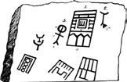
Nevada, Grapevine Kanyonu’ndaki tapınak zemin planı
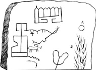
Nevada, Grapevine Kanyonu’ndan başka bir yazıt
Grapevine Kanyonu’ndan resimler, Nevada:
1: Bir tapınağın zemin planı.
2: Suya batışın sembolü: Sayısız insanıyla beraber batmış.
3: Batmış toprak veya topraklar üzerinden sonsuza dek ayrılmış olan güneşin sembolü; günbatımını, yaşam haçını ve batışı da içeriyor.
Bu zemin planının (1) ayrıntıları şöyle diyor: “Bu tapınak, sayısız canla birlikte batan anayurt Mu’nun anısına dikilmiştir.”
Merkezi figür (4) bir mabedi veya kutsallar kutsalını simgeliyor. Mabedin içinde m ters duruyor. Bu, anayurt Mu’nun m’si, mabedin ona adandığını ve onun artık var olmadığını gösteriyor. O, ölmüş.
Merkezi figürün her iki yanında dirilişin sembolü Tau’dan (T) üçer tane yer alıyor. Bu, dünyanın her yanında anayurttan bahsetmenin sık rastlanan bir yolu.
Sri Lanka’daki Anarajapura Ay Taşları’nda sembolik hayvanlar üçerli gruplara ayrılmış. Tiahuanaco, Peru’daki büyük taş anıtta tahtlar üçlü gruplar hâlinde. Orta Amerika figürlerinin başlarında üçer taç var. Örnekler sürüp gidiyor.
Mabedin üç bölümü, takipçinin dini eğitimindeki üç aşamaya yükseldiği üç odayı temsil ediyor. Antik tapınakların alışıldık yapısı bu şekilde. Girişteki üçlü figür (5) de üç oda olduğunu gösteriyor. Tüm odaların uçları bu şekilde, bu cenneti ve dünyayı temsil ediyor. Odanın aşaması, üçgenin içindeki yıldızların sayısıyla gösteriliyor.
Tapınağın sağında bir şekil (2) yer alıyor. Bu bileşik bir sembol ve açılımı “batmış toprak veya topraklar.” 2a ise kalabalık bir halkın sembolü. Böylece sembol sayısız insanın sulara gömüldüğünü gösteriyor.
Solda başka bir bileşik sembol (3) bulunuyor, a güneş, b ise batmış topraklar. Tercüme edildiğinde anlamı, “Güneş, batmış olan bu toprakların üzerinde artık parlamıyor.” Dolayısıyla, resmin tamamının söylediği şu: “Mu, sayısız insanla beraber sulara gömüldü. Güneş artık onun üzerinde parlamıyor. O, karanlıklar içinde. O, ölü.”
İkinci taş ilkinin hemen yanında. Bu bir kurban törenini temsil ediyor: 1. Sunaktaki hayvan. 2. Onu tüketecek olan alevler. 3. Batmış Mu’nun sembolü.
Bu çizimi, bir öncekini desteklemek, ayrıca tapınağın Mu’ya adanmış olduğuna ve Mu’nun sulara gömüldüğüne dair fazladan kanıtlar sunmak için ekledim.
Anayurdun yok olmasından önce ateşe verilmiş kurbanlar yoktu. Bunlar, ateşlerle sarılıp yanan bir uçuruma düşen Mu ve halkının anısını yaşatmak için dini seremonilere eklendi. Bu taş (sayfa 200) yaklaşık olarak, ağıt yakan yaslı bir insan figürünün duruşunu andırıyor. Figür, antik Mançu tarzında ağır bir pelerinle örtülmüş ve elleriyle dizlerini tutmuş. Üzerinde havanın aşındırdığı başka bir taş, figürün başını temsil ediyor. Gözlerinin yerine kazınmış ve boyanmış iki sembol var ve bu sembollerden ikisi de oldukça belirgin. 1. sembolün anlamı chipezi, tercüme edilmiş hâliyle, “Bir ağız açıldı, alevler yükseldi buharlarla birlikte, toprak yıkıldı ve battı.”
2a: Bu Güneş İmparatorluğu’nun, Mu ülkesinin arması. Sekiz ışınlı bir güneş. Merkezinde, “İmparatorluğu” anlamına gelen sembol yerine 2b’deki “Ahau, Kral, Yüce Kral, Büyük Hükümdar” anlamlarına gelen sembol yer alıyor.
Serbest okumayla bu yüzdeki yazılar şunu söylüyor: “Bir ağız açıldı, volkanik ateşler ve buharlar yükseldi, toprak yıkıl-
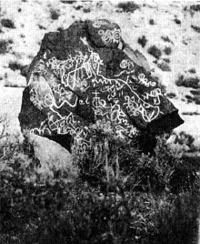
Nevada’da bulunan kaya resmi
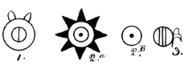
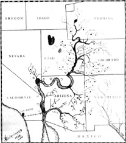
Kolorado nehri ve kolları
Uçurum Sakinlerinin Amerika kıtasına giriş yaptıkları yol
dı ve Mu, Büyük Hükümdar, Güneş İmparatorluğu, o ateş çukurunun içine, sulara gömüldü.”
Figürün sol kolundaki ilk sembol (3) the-the-ha, tercüme edilmiş hâli ile “suya doğru” veya “suyun yönünde.”
Ana sembolde, birbirine karışan iki akıntı görünüyor. Bu resimdeki sembollerin tümü Uygur-Maya dilinde. Bu insanlar Moğollar olabilir.
Bu, suya giden yolu gösteren bir yol tabelasından başka bir şey değil. Suyun olduğu yöne bakan kabaca çizilmiş antik, alışıldık bir yüzden oluşuyor. Bu bölgede bulunabilen ilk su kaynağı bir pınar, gölet veya göl, yolun daha da ilerisinde ise bir nehir mevcut. Yol izlerle işaretlenmiş ve figür gölet veya pınara ulaşmak için hangi yolun kullanılması gerektiğini gösteriyor.
Amerika kıtasına gelen ilk insanlar, yerleşimlerini güneybatı eyaletleri boyunca kurdular. Bu yerleşimler, Meksika’da kurulan akranlarının da yok olduğu aynı zamanlarda, afetlerle ortadan kalktı. Bunlar çok eski bir tarihte, muhtemelen Pliyosen’de gerçekleşti.
İkinci bir medeniyet ve belki de bir üçüncüsü bunları izledi. Bunlar da afetlerle ve büyük dağ sıralarının yükselmesi sonucu yok oldu. Bu dağların yükselişi aynı zamanda Colorado, Arizona ve Nevada’da birçok sulak araziyi de çöle çevirdi. Uçurum Sakinleri, Mu ülkesinden gelen son yerleşimcilerdi. Güneybatı eyaletlerine ilk yerleşimlerin kurulması, dağların yükselmesinden önce gerçekleşti. Uçurum Sakinleri Amerika’ya vardıklarında dağlar muhtemelen çoktan yükselmişti, zira bu insanların evlerine dağların yamaçlarında rastlanıyor.
Uçurum Sakinleri Yucatan-Maya dilini kullanıyorlardı. Bu, Nevada’da ortaya çıkardığım ve Maya hiyeratik alfabesini kullanan yazılarından anlaşılabiliyor. Uçurum Sakinleri’nin Colorado’da bulunan kalıntılarının konumlarından, Colorado Nehri’nin ağzının bu insanlar için Amerika’ya giriş yolu olduğu sonucuna varılabilir.
Anayurttan gelirken belirledikleri hedef olan Colorado Nehri’nin ağzına ulaştıktan sonra nehrin boyunca ve iç kısımlara doğru ilerledikleri gayet açık. Çeşitli eyaletlerde bulunan kalıntılardan bu insanların kendilerini ana nehirle sınırlamak yerine nehrin dalları ve kolları boyunca yerleştikleri, hatta Zuni Yolu gibi kara yollarını kullanarak suyun ötesine geçtikleri görülüyor. Yine de genel olarak nehir yollarını kara yollarına tercih ettikleri anlaşılıyor.
Colorado Nehri’nin ağzından iç kısımlara doğru ilerledikçe ilk olarak, şimdi kalıntılarıyla dolu olan Arizona eyaletinden geçtiler. Eski evleri ve kalıntıları Gila, Küçük Colorado ve Grand Nehirlerinde yerleştiklerini gösteriyor. New Mexico’da da çok sayıda kalıntı mevcut.
Colorado Nehri’ni takip ederek Arizona’dan geçtikten sonra Utah’a vardılar. Utah bu insanların kalıntıları yönünden çok zengin. Colorado’nun dalları Nevada ve Wyoming’e doğru uzanmayı sürdürüyor ve bu bölgelerde de bu antik halkın izleri bulunuyor.
Uçurum Sakinleri ana nehri geride bıraktıktan ve Grand, San Juan, White ve Yampa gibi kollar boyunca ilerledikten sonra doğal olarak, şimdi kalıntıları yönünden çok zengin olan Colorado eyaletine gireceklerdi.
Yalnızca muhtemel değil makul de olan bu rotalara dayanan hesaplamalarla, kayalara kazınmış ve boyanmış olan, sıra dışı el ve ayaklara sahip bu büyük figürlerin, şüphesiz, yolcuya kendisini bekleyen seyahatte yol gösteren, basit dilde yol işaretleri olduğu anlaşılıyor. Bunun doğru olduğunu biliyorum, zira bazılarını ben deşifre ve tercüme ettim.
Colorado Nehri’ni çevreleyen tüm bölgeler, eski Uçurum Sakinleri’nin eserleriyle kelimenin tam anlamıyla dolmuş durumda. Bu kalıntılar uçurum evlerinden, kaya resimlerinden, kaya yazılarından ve çeşitli alet ve araçlardan oluşuyor. Bu eserlerin yalnızca Colorado Nehri ve kollarının civarında bulunuyor oluşu, bu nehrin Uçurum Sakinleri’nin ve muhtemelen onlardan öncekilerin Amerika’ya açılan kapısı olduğuna dair en güçlü kanıt.
Uçurum Sakinleri’nin Amerika’ya ne zaman geldikleri bir sorun teşkil ediyor. Bize bu konuda en ufak bir fikir verecek hiçbir kesin delil yok. Öte yandan, bu insanlar veya ataları dağlar yükselmeden önce bu bölgede yaşıyorlardı, bu da 12.500 yıl önce denk geliyor.
Arizona: Smithsonian Enstitüsü’nden Dr. Walter Hough, Arizona fosil ormanları hakkında bir inceleme yaptı ve dört farklı halkın kalıntılarını bulduğunu rapor etti. Bu bulgu benim batı ve güneybatı eyaletlerinde ve Meksika’da yaptığım keşiflerle örtüşüyor. Hough’un bulduğu medeniyetlerin üçü dağlar yükselmeden önce kurulmuştu.
Çizim Arizona Hava Supai Kanyonu’ndan antik bir kaya resminin bir kopyası. 12 bin yıldan daha eski ve insanın Arizona’da mastodonla aynı zamanda yaşadığını gösteriyor.
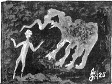
Samuel Hubbard’ın izniyle
Arizona, Hava SupaiKanyonu’ndaki mastodon resmi.
New Mexico: New Mexico’nun antik tarihi, geçmişi Kuzey Amerika antik halkları arasındaki en büyüleyici hikayelerden birini oluşturan Pueblo Kızılderilileri’nin antik tarihidir. Pueblo Kızılderilileri, Amerika’ya ilk ulaştıkları zamanlarda oldukça uygar ve aydın insanlardı. Gelenekleri ve onlar hakkında bulunan bilgiler bunu kanıtlıyor. Anayurttan bu kıtaya gelmiş tüm Kuzey Amerikalılar arasında en eski kayıt ve geleneklere sahip olanlar onlar.
Batı ve güneybatı eyaletlerimizde birçok antik şehir ve yapı kalıntısı, kaya resimleri ve yazıları, çömlekler ve gelenekler bulunuyor. Ünlü bilim insanlarımız ve arkeologlarımız ise bize, günümüzde yaşayanlardan önce bu ülkede bulunan insanlardan bahsetmek konusunda oldukça utangaç davranıyorlar. Bize verdikleri en detaylı bilgi bu yazıların 3 bin ile 5 bin yıl arası bir tarihe sahip olduğu.
Bilgilerin çoğunu Hopi ve Zuni Pueblolarından öğreniyoruz. Bana göre bu kabileler, şimdi hayatta olan tüm Kuzey Amerika Kızılderili kabileleri arasında en ilgi çekici olanlar. Muhtemelen bunun sebebi onları diğerlerinin tümünden daha iyi biliyor olmam. Anayurtla bağları açıkça ortada ve gelenekleri de bize Amerika’ya Mu’dan geldiklerini anlatıyor. Tüm dini ilhamlarının izi insanoğlunun ilk dinine kadar takip edilebiliyor ve kutsal sembolleri Mu’da kullanılanlarla neredeyse aynı.
Elimde bir Pueblo törensel battaniyesi var, bunun üzerindeki desenler ise anayurttan türemiş olan kutsal semboller. Gelenekleri ilgi çekici ve geniş kapsamlı. Etkileyici geleneklerinden biri ilk adam ve kadının, Kitabı Mukaddes’in Adem ve Havva’sının yaratılışı hakkında. Anayurdun dilinin, efsanenin kelimelerin bazılarının ezoterik anlamlarında da bulunuyor olması büyük önem taşıyor.
Zuni ve Hopilerin, insanoğlunun kaderine şekil verdikleri söylenen iki özel tanrıları var. Bu tanrılar kutsal sayılıyor ama onlara tapılmıyor. Başka bir deyişle, bunlar bizim azizlerimize benzerlik gösteriyorlar. Bu tanrıların isimleri Ahaiinta ve Matsailema. Bunlar, Güneş’in Tanrısı’nın ilk çocuklarıydılar.
Bu cümle dikkatli bir inceleme gerektiriyor. Hopi Kızılderilileri Tanrı’nın kolektif sembolü Güneş’i Tanrı’nın kendisinden ayırt ediyorlar. İlk erkek ve kadının, Tanrı’nın sembolü olan Güneş’in değil, Tanrı’nın çocukları olduğunu belirtiyorlar.
Antik metinlerde, özellikle de Hindistan ve Mısır kaynaklı olanlarda, güneşten “yaşamın babası” ve sulardan “yaşamın anası” olarak bahsedildiği bölümler buldum, fakat bunların tümünde kastedilen yaşam, özel bir yaratım olan insan değil, doğadaki diğer canlılar. Bu metinler ayrıca güneş kuvvetlerinin benzer dünya kuvvetleri üzerindeki etkilerinden bahsediyor.
Hopi Kızılderilileri erkek ve kadının, Tanrı’nın, Güneş’e hükmeden Yüce Tanrı’nın çocukları olduklarını, dolayısıyla doğanın eseri olmadıklarını söyler. Başka bir teyit de erkek ve kadının ezoterik adlarında yatıyor. Adları, anadilin hecelerinde oluşuyor ve diğer tüm antik dini yazılarda olduğu gibi gizli bir anlama sahip. Örneğin Ahaiinta, anayurdun A-hai-in-ta kelimelerinden, Matsailema ise Ma-tsai-le-ma’dan oluşuyor. Bir araya gelince bunların anlamı şu: “Tanrı ilk adam ve ilk kadını dünyada yaşamaları için yarattı. Tanrı’nın bu ilk çocukları, tüm insanlığın anne babasıydı.”
Pueblo Kızılderililerinin dili, daha önce belirttiğim gibi anadilde birçok kelime içeriyor ve diğer birçoğunun da kökü aynı yere dayanıyor. Başka bir efsane de şu şekilde:
“Ataları Amerika’ya gemileriyle denizin ötesinden, batan güneşin yönünden geldiler.”
Böylece bu insanların Amerika’ya batıdan, adı sömürülen ve kötüye kullanılan Bering kara köprüsü üzerinden değil, gemilerle geldikleri gösterilmiş oluyor.
Pueblolar Amerika’ya ilk geldiklerinde yüksek bir medeniyet seviyesindeydiler. Jeoloji hakkında olağanüstü tecrübeleri, gelişmiş dilleri ve anayurt sembollerini kullanmış olmaları da bu savı destekliyor.
Pueblo Kızılderilileri hakkında keşfettiğim ilginç bir rastlantı da şuydu: Cibola’da Yedi Kutsal Şehir bulunuyordu. Bu, anayurdun taklit edilmesi ve koloni imparatorluklar arasında yaygın görülen bir gelenek. Örneğin, anayurdun din ve bilimin merkezi olan yedi kutsal şehir; aynı durumun görüldüğü Atlantis ve Hindistan’ın yedi Rishi (kutsal) şehri.
Uzun bir süre Hopi Kızılderililerinin arasında yaşayan Teğmen Cushing bu süre içinde, devralan halkın anlamını kavrayamadığı için efsane olarak nitelendirdiği Zuni Efsaneleri’ni tercüme etmişti. Bu Pueblo gelenekleri binlerce yıl boyunca sözlü olarak babadan oğula aktarılmıştı, fakat bu gelenek bir efsane değil gerçek tarihti. Şimdi Teğmen Cushing’in tercümelerinden alıntılar yapacağım; bunlara Pueblolar hakkındaki kendi kişisel tecrübelerimi eklediğimde ortaya ilgi çekici parçalar çıkacak.
Örneğin, bir Zuni geleneğini şöyle anlatıyor: “Bir zamanlar dünya suyla örtülüydü, hiçbir yerde toprak gözükmüyordu.” Bu bir efsane mi? Hiç de değil, zira bunun doğruluğu anayurdun kutsal metinleri ve jeoloji tarafından kanıtlanmış durumda.
Başka bir Zuni geleneği şöyle diyor: “insan dünya üzerinde ortaya çıkmadan hemen önce toprak o kadar yumuşak ve ıslaktı ki insan onun üzerinde yürüyemezdi, ayakları toprağa saplanırdı ve bu yüzden insan onun üzerinde yaşayamazdı.” Bu yumuşak, ıslak topraktan batmadan geçmek için insanın ayaklara nasıl bir şey giymesi gerektiğinin tanımlanmış olması oldukça gülünç.
Jeolojik çalışmalar dünyanın herhangi bir zamanında böyle bir toprak yapısından bahsediyor olmasa da erken Üçüncü Devir hayvanlarının ayak şekli ve yapısı durumun gerçekten böyle olduğunu açıkça gösteriyor, zira bu hayvanların uzun, aralıklı parmakları, nehir ve göllerin çamurlu kıyılarında yaşayan günümüz yağmur kuşlarının ayaklarını andırıyor.
Başka bir sözde Zuni efsanesi: Eski Zuniler bundan binlerce ve binlerce yıl önce, Karbonifer (Karbonifer Dönem, Paleozoik zamanın beşinci alt bölümü olarak Karbonifer kayaç sistemlerinin oluştuğu jeolojik zaman dilimidir. Günümüzden 354 milyon yıl önce başlayıp 292 milyon yıl önce sona erdiği kabul edilir) dönemden Kretase’nin (Mezozoik Zaman’ın üç alt bölümünden sonuncusudur. Günümüzden 142 milyon yıl önce başlayıp 65 milyon yıl önce sona erdiği kabul edilir. Kretase, Tebeşir Dönemi olarak da bilinir) sonuna kadar dünyada gezinen büyük sürüngen yaratıklar hakkında mükemmel derecede bilgi sahibiydiler. Gelenekler şöyle diyor:
“Onlar canavar ve avcıydı. Pençeleri ve korkunç dişleri vardı. Bir dağ aslanı yanlarında köstebek gibi kalırdı. Sonra, Yukarıdakiler bu hayvanlara şöyle dedi: ‘İnsanlara zararınız değil faydanız dokunsun diye hepiniz taşa döneceksiniz.’ Böylece sizi ebedi taşa çevirdik. Böylece dünyanın yüzeyi
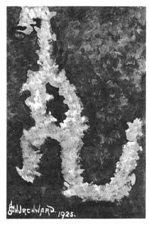
Samuel Hubbard’ın izniyle
Arizona, Hava Supai Kanyonu’ndaki oyulmuş kaya: Tyrannosaurus.
Hopi efsanesi büyük sürüngenlerden bahsediyor.
sertleşti ve her türden yaratıkların çoğu taşa döndü. İşte böylece onları dünyanın her yerinde böyle buluyoruz. Gövdeleri bazen büyük (şekil olarak), kendileri gibi; bazen buruşup çarpılarak şekilsizleştiler. Kayalar arasında, sık sık, artık yaşamayan hayvanlar görürüz, bu da bize erken günlerde her şeyin farklı olduğunu gösterir.”
Bu anlatılan başka bir Zuni efsanesi diye bilinmekte. Fakat gerçekte böyle bir efsane olmadığını kanıtlamak ve Zuni geleneklerinin gerçeklerini öğrenmek için herhangi bir müzeye gitmek yeterli. New York’taki Doğa Tarihi Müzesi’ne gidip yakalıklı Trachodonlara bakın ya da Washington’daki Birleşik Devletler Ulusal Müzesi’ni ziyaret edip, Jurassic zamana ait bir dinozor olan Stegosaurus’un ezilip yassılaşmış ama eksiksiz ve mükemmel iskeletini inceleyin.
Bunların Pueblolarla hiç ilgisi bulunmadığını ve geleneğin bir efsane olmadığını kanıtlamadığını söyleyecek okuyucular olabilir. Şüpheciler için Arizona’daki Hava Supai Kanyonu’nu ele alalım. Burada, bir kayanın üzerine çizilmiş ve kazınmış hâlde, dünya üzerinde yaşamış en korkunç etobur dinozorun, Kretase devrinin dehşetli Tyrannosaurus’unun bir resmi yer alıyor. Bu resim muhtemelen 12 bin yıldan daha uzun bir süre önce çizildi.
Bu sürüngen türünün bilim insanlarımızca keşfedilmesi son yüz yıl içinde gerçekleşti. Cuvier bir iskelet parçası buldu ve bunu kullanarak bir model hazırladı: Dört ayak üzerinde yürüyen büyük bir kertenkele. Sanırım Tyrannosaurus’un gerçek şeklinin yalnızca son elli yıldır bilindiğini söylersem yanılmış olmam. Oysa antik insanlar onu binlerce yıl önce aslına uygun şekilde kayalara çizerek betimlemişlerdi.
Zunilerin “Tufan” hakkında da bazı efsaneleri vardı. Bu afetle ilgili geleneğin G. W. James tarafından yayımlanan hâlinden bir alıntı yapıyorum:
“Uzun, uzun zaman önce Zuniler çok kötü kalpliydi ve Yukarıdakiler’in uyarılarına rağmen kötülüklerinden vazgeçmiyorlardı, ta ki Gölge İnsanlar onları dünya yüzünden silmeye karar verene dek. Bu yüzden dünyanın iki büyük su kaynağı açıldı: Tüm yağmurların indiği yukarıdaki hazne ve tüm pınarları, dereleri ve nehirleri besleyen aşağıdaki hazne. Tıpalar çekildi, yağmur gökten döküldü ve seller yükseldi. Zuniler tanrıların gazabının üzerlerine yağdığını anladılar. Telaşla Tai-yo-al-la-ne’nin (Gök Gürültüsü Dağı) zirvesine kaçtılar, burada kötü ve dinsiz olanların en gençleri, korku içindekilere gülüp, göğün ve yeraltının sellerinin bile onlara ulaşacak kadar yükselemeyeceğini söyleyerek alay ettiler. Ama su yavaş yavaş yükseldi, gittikçe daha da yukarı çıktı, ta ki alaycılar bile sessizliğe gömülüp, ruhları soğuk bir dehşetle dolana dek. Birçok kardeşliğin rahipleri umutsuzca dans etti, şarkı söyledi, dua etti, büyük ateş yaktı, ilaçlar hazırladı ve adaklar sundu. Fakat Yukarıdakiler’in öfkesi geçecek değildi. Sonunda Rahiplerin Başı, düşünmek, dua etmek ve en önemlisi de halkı için aracılık etmek amacıyla dağın sakin bir kısmına çekildi. Geri döndüğünde Yukarıdakiler’in öfkesinden yalnızca tek bir şekilde kurtulabileceklerini söyledi. Genç erkeklerin en güçlüsüyle, genç kızların en güzel ve tatlı olanı kurban edilmeli, uygun seremonilerle sulara atılmalıydı. Böylece tanrıların gazabı yatışacak ve öfkeleri uzaklaştırılacaktı. Halk üzüntüyle dinledi ve bu zorunlu kurban için kimin adak olarak sunulması gerektiğini tartıştı. Genç bir ilah kadar yakışıklı bir oğlan bulundu. Atletik, sağlıklı, göz alıcı, güzel yüzlü, herkesin sevdiği bir oğlan. Sonra, kimse fısıldamaya cesaret edemese de herkesin aklından kurban edilecek kadar kıymetli olan tek kızın, muhterem Cacique’in sevgili, biricik kızı olduğu geçiyordu. Halkının kimi seçtiğini görmek için başını kaldırdığında ortada bir kız yoktu. Gözleri yaşlarla doldu. Tatlı kızını yanına çağırarak ona birkaç söz söyledi, kızı da saygıyla başını eğdi. Kız, oğlanın yanında yerini aldığında orada bulunanlar sunacakları kurbanlarının tamam olduğunu gördüler. İkisine de en güzel tören kıyafetleri giydirip; saçlarına, kollarına ve ellerine uygun takıları yerleştirdiklerinde genç çift artık hazırdı. Sonra, başta yavaş ve sessiz ama gittikçe yükselen bir ses ve ıstırapla ölüm şarkısı söylendi. Cacique ikisini de kutsadı ve böylesine büyük bir bedelle kazanacakları Yukarıdakiler’in affını dileyerek, ikisini de köpürdeyen sulara attı. Bu tam zamanında olmuştu, zira etrafı tamamen sularla sarılan kalabalık şimdiden dağın en tepesinde, küçük bir kara parçasına hapsolmuş durumdaydı. Aradan bir saat bile geçmeden sular alçalıp sakinleşmeye başladı. Vadilerin kuruması ve tövbe etmiş halkın evlerine dönmeleri ise günler ve haftalar aldı. Bundan kısa bir süre sonra, ahlaksızlıkta başı çekmiş olan gençlerden biri tesadüfen başını kaldırıp (Tai-yo-al-la-ne) baktı ve dağın tepesinde duran iki figür gördü. Halkını çağırdı ve kısa süre sonra herkes orada toplanmış, şaşkınlık ve huşu içinde, Yukarıdakiler’in yolladığını düşündükleri bu işarete bakıyordu. Cacique vakur biçimde bunun, kurban olarak sundukları sevdiklerinin cennetten gelen resimleri olduğunu söylediğinde bu doğrulanmış oldu. Dış taraftaki büyük olanı oğlan; içteki küçük olanıysa genç kızdı.”
Aslına bakılırsa, Gök Gürültüsü Dağı’nda bu oklardan, ikisi büyük, dördü küçük olmak üzere altı tane bulunuyor. James, Zuni anlatıcıya teşekkür ettikten sonra bu gerçeğe dikkatini çektiğinde Zuni şöyle yanıtlamış:
“Oğlan ve genç kız Yukarıdakiler’e yalnızlıklarından ya-karmışlar, bu yüzden tanrılar onlarla evlenmiş ve zamanla dört çocuk doğmuş, iki kız ve iki oğlan, böylece mutlu olmuşlar.”
Bu gelenekte “cacique” kelimesinin kabilenin şefi veya liderini tanımlamak için kullanıldığı görülüyor. Cacique, baş ve asıl anlamlarına gelen bir Quiche-Maya kelimesi. Peru’da, aslen Orta Amerika’dan gelmiş olan Quicheler, Quichualar olarak bilinir ve baş, asıl anlamında kullandıkları kelime cacique’dir. Aynı duruma Venezuela’da, Orta Amerika’dan Cara-Maya’ların soyundan gelenlerde de rastlanır.
Sel ile ilgili bu Zuni geleneği özellikle jeolojik içeriği bakımından önemli; zira bu, son manyetik felaketin sularının, Amerika’da jeolojik sürüklenme hattının çok ötesine uzandığını gösteriyor.
Birçok Pueblo geleneği, dilleri, kutsal sembolleri ve diğer kanıtlar Puebloların Amerika’ya aslen Mu’dan geldiklerini kanıtlıyor. Daha önce de gösterdiğim gibi, Mu 12 bin yıl gibi bir süre önce sulara gömülmüştü. Dolayısıyla, bu Pueblo Kızılderilileri doğrudan Mu’dan geldiklerine göre en azından 12 bin yıldır Amerika’da bulunuyor olmalılar. Puebloların dillerinde birçok Quiche-Maya kelimesi var, bunun yanı sıra özgün kavramlarından çoğu Quichelerinkiyle aynı. Bu da bu iki kabilenin ya anayurtta ya da Amerika’ya ilk ulaştıkları tarihte, coğrafi olarak çok yakın olduğunu gösteriyor.
Pueblolar günümüzde beyaz adamın çok az etkisinde kalmış durumda ve hayatlarını atalarının yüzyıllar boyunca yaşadığı gibi sürdürüyor, yalnızca çocuklarına düzgün telaffuz et-
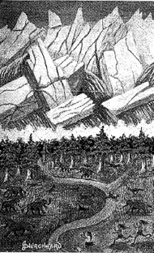
Kuzey Amerika üzerine çöken Son Manyetik Felaket
meyi öğrettikleri dillerinin saflığını değil, adetlerini, geleneklerini, antik tören ve ayinlerini de korumaya büyük özen gösteriyorlar.
Quiche-Mayaları ve uzak geçmişleri arasındaki bir bağ da meşhur sembolleri, sakallı yılan Quetzalcoatl. Bu, özellikle Parjarito Park bölgesinde sık görülüyor.
Yukarıda anlatılanlara ek olarak, Las Vegas Üniversitesi’nden Profesör E. L. Hewitt antik insanların evlerinde mastodon ve kılıç dişli kaplan fosilleri, ayrıca fosil değil canlı fildişinden yapılmış aletler bulduğunu belirtiyor, böylece Hava Supai Kanyonu resmini doğruluyor.
Colorado Çölü: Colorado Çölü’nde eski, büyük bir medeniyetin ünlü kalıntıları bulunuyor. Bu kalıntılar bilim insanları için bir muamma olsa da bunlar yalnızca antik insanın öyküsünün ve asıl yaşama alanının kanıtları. Colorado Çölü, Oregon ve birçok diğer çöl gibi, dağların yükselişiyle susuz kalmadan önce bereketli topraklardı. Öte yandan, şimdi Colorado Çölü olan bölgede yaşamış insanların, dağların yükselişinden önce orada bulundukları kesin bir şekilde kanıtlanıyor.
Nebraska: Omaha, Nebraska’dan Profesör R. W. Gilder dünyanın herhangi bir yerinde yapılmış en önemli ve değerli arkeolojik keşiflerden birine imza attı. Onun keşfi, Üçüncü Devir kadar uzun bir süre önce Kuzey Amerika’da yüksek bir medeniyete sahip insanların yaşadığını ortaya koyuyor.
Gilder, Kitabı Mukaddes’te “Tufan” olarak geçen jeolojik Buzul Çağ’ın, Son Manyetik Felaket’in sularıyla yeryüzünden silinen bir medeniyet keşfetmişti.
Gilder şöyle anlatıyor: “Batının bilindik bufalo çukurları aslında bufalolar için yapılmamıştı. Bunlar, binlerce yıl önce
yaşamış ve çoktan ortadan kalkmış olan bir ırkın yeraltı evlerinin harabelerine açılan geçitlerdi. Bu insanların kim oldukları veya nasıl yok oldukları hakkında hiçbir belirti yok.”
Bu çoktan örtülmüş çukurlarda Gilder kayıp ırkın sanatına ait çeşitli örnekler buldu (sayfa 219):
Şekil 1: Sırlı kilden bir çubuk.
Şekil 2: Kemikten yapılmış bir olta.
Şekil 3: Belirgin çekik gözlere sahip kilden bir surat.
Şekil 4: Sabun taşından küçük, pembe bir baş. Gilder bunun hakkında şöyle diyor: “Pembe baş her yönden Mısır işi. Özenle yontulmuş ve parlatılmış. Başlık da Mısır’a ait ve Mısırlıların kullandıkları dikdörtgen kulak kısmına bile sahip. Mısır işinden de öte, eğer Doğu müzelerindeki mermer büstler Mısır kralının betimlemeleriyse, bu II. Ramses’in kendi yüzüne benziyor.”
Şekil 5: Deniz kabuğundan yapılmış bir süs.
Şekil 6: Geyik boynuzundan yapılmış bir tarak.
“Bu yeraltı mağaralarının tabanı kömürleşmiş çubuk, saz, ot ve mısır koçanlarıyla kaplı. Her mağaranın zemininde ev aletlerinin ve diğer değerli eşyaların saklandığı gizli bir bölme bulunuyor. Bazen aynı mağara içinde birden fazla da olabiliyor. Bölmelerin ağzı hep yanmış kilden tabakalarla kapatılmış durumda. Bunların üzerinde de bir kül tabakası var. Tabana doğru bir testi veya şişe gibi genişleyen boşluk, çoğu zaman bir domuz başı büyüklüğünde.”
Bu yapay mağaralar, çayırların üzerinde akan afet dalgalarının sürüklediği toprak ve yığınlarla dolmuştu. Zamanla bu yığınlar sıkışarak girişte “bufalo çukuru” denilen çöküntünün oluşmasına neden oldu. Gilder’ın medeniyeti son manyetik felaketle yok olmuştu. Dolayısıyla, bu bir Üçüncü Devir medeniyetiydi.
Kentucky: Kentucky’de Gilder’ın Nebraska’da keşfettiği ile aynı zamana ait bir uygarlığın kalıntıları bulunuyor. Blue Lick Springs’de bundan birkaç yıl önce bir kazı çalışması yapılmıştı. Yerin 20 feet altında işçiler mastodon kemiklerine rastladılar. Daha derinde bir çakıl katmanı buldular, çakılın altındaysa taştan bir döşeme. Bu döşemeyi oluşturan taşlar işlenmişti. Üst yüzeyleri kesilmiş ve düz, alt yüzeyleriyse pürüzlüydü.
Kazıda bulunan mastodon, çakılın üzerinde yatıyor olmasından anlaşıldığı gibi Pleistosene (Pleistosen, yaklaşık 2.5 milyon yıl önce başlayan ve yine yaklaşık 10-14 bin yıl önce bugün içinde bulunduğumuz ve Holosen olarak adlandırdığımız dönemin başlamasıyla biten buzul çağları dönemidir) aitti. Çakıl son manyetik felaketin getirdiği sularla oluşmuştu. Taş döşeme de çakılın altında bulunduğuna göre bu medeniyet, Gilder’ın keşfi, Üçüncü Devir’e ait.
Kentuckyli tarihçi George W. Ranck, Lexington’un Tarihçesi adlı eserinde şöyle yazmış:
“Kentucky’de şimdi Lexington olarak bilinen şehir; isimleri, dilleri ve tarihleri hakkında en ufak bir eser kalmamış kayıp bir ırkın ölü metropolünün tozları üzerine kurulmuştur. ‘Geyik Boynuzu Ülkesi’ne gelen ilk göçmen ve maceracıların bulduğu hızla çürüyen harabelerin kalıntıları olmasa, Lexington’un kurulduğu yerde böyle bir şehir ve halkın bulunduğu gerçeği bile asla bilinmeyecekti. Ama bu büyük şehrin kalıntıları ve güçlü halkının varlığı konusunda en ufak bir şüphe yoktur. O hâlde bu gizemli varlıklar kimlerdi? Nereden gelmişlerdi? Dinleri ve yönetim biçimleri neydi? Bunlar muhte-
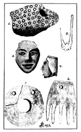
Gilder’ın Nebraska’daki keşifleri. 1. Sırlı kilden çubuk,
2. Kemik olta, 3. Kilden surat, 4. Pembe sabun taşından baş,
5. Dekoratif deniz kabuğu, 6. Geyik boynuzundan tarak.
melen ölümlü insan tarafından cevabı asla verilemeyecek sorular olsa da, onların Kızılderililerden asırlar önce yaşayıp geliştiklerinden kim şüphe edebilir? Kendilerinin ardından gelecek, yıkık ve otlarla kaplı duvarları üzerinde geyik ve bufalo avlayacak olan kızıl insanları bilmeden burada devasa tapınak ve şehirlerini kurdular. Kolomb eski İspanya sancağını Amerika’nın kıyılarına dikmeden önce; Galya, İngiltere ve Almanya göçmen barbar kabileleriyle doluyken ve belki de Roma İmparatorluğu ihtişamının doruğuna yükselmeden çok önce onlar burada yaşadılar, çalıştılar ve öldüler. Fakat bir edebiyatları yoktu ve öldükleri zaman tamamen unutuldular. Büyük bir uygarlık olabilirler ama öyle olup olmadıklarının buraya gelenler için hiçbir farkı yok, zira büyüklüklerinin kaydı hiç tutulmadı. Elleriyle ürettikleri ihtişamlı eserlere güvendiler. Artık onlar ölü bir ulus ve kayıp bir halk.”
Gerçekten de elleriyle ürettikleri ihtişamlı eserlerin akıbeti, söz konusu yapılar olduğunda “Ninova ve Sur ile eş” olsa da elleri çürümez kayalar üzerine başka kayıtlar da bıraktı. Onları anayurt Mu’dan gelen yerleşimciler olarak tanımlamamızı sağlayacak olan da işte bu kayıtlar.
Sonuç olarak, yukarıda bahsettiğim Kuzey Amerika’daki keşifler sayesinde Kuzey Amerika’nın tüm batı bölgesinde, Üçüncü Devir’in sonlarında ve jeolojik Buzul Çağı’ndan önce yüksek bir medeniyetten insanlar yaşadığının kesin kanıtlarına sahibiz. Birçok efsaneyle doğrulanan yüzlerce kaya yazısı da bize, Kuzey Amerika’daki bu ilk medeniyetlerin Mu adlı bir ülkeden geldiklerini ve “Mu’nun Amerika’nın batısında, büyük suda ufkun ötesinde” olduğunu anlatıyor.
Nebraska ve Kentucky’deki medeniyetlerinin Pliyosen Çağı’nda (Yaklaşık 5 milyon yıl öncesinden 2 milyon yıl öncesine dek süren üçüncü jeolojik çağın -tersiyer- son dönemi) varoldukları ortaya konuldu. Oregon, Nevada, Utah, Colorado, Arizona ve New Mexico, bize medeniyetlerin dağlar yükselmeden önce var olduklarını gösterdi. Bu medeniyetler dağlardan daha eski bir zamana ait oldukları için Üçüncü Devir’e uzanan bir tarihleri var. Üçüncü Devir’in ne kadar içine uzandıkları bilinmiyor, zira şimdiye kadar bize bunu söyleyecek hiçbir tarih açığa çıkmadı. Bu soru cevapsız kalmayı sürdürüyor.
Batı eyaletlerimizdeki, Uçurum Sakinleri olarak bilinen antik insanlar birkaç farklı kabileden oluşuyordu. Bunların yalnızca birer kabile değil, ayrı birer ulus olmaları ihtimali de var. Bu sonuca, farklı diller konuşulduğunu gösteren kaya yazıları ve çizimlerinden varıyorum. Yazılar da farklı sembol türleri ve alfabeleri kullanılarak yazılmış (sayfa 253):
Şekil 1. Arizona. Bir kara yolunun rotası.
Şekil 2. New Mexico. Kara yolu rotası.
Şekil 3. Utah. Bir yerleşim yerine giden kara ve suyolu. 1 veya 2’deki insanlara ait değil.
Yakın bir inceleme, Kuzey Amerika’nın Uçurum Sakinleri’nin kullandıkları yazı ve resimlerin, hemen yanlarında bulunan benzerlerinden binlerce yıl daha eski olduğunu gösteriyor. Bu antik yazı ve resimlerin dağların yükselişinden önceye ait oluşu, bulundukları kayaların bazılarının çatlayıp kaymış olmasından anlaşılıyor. Bazı durumlarda yazılar bir çatlakla ayrılmış, bazılarındaysa figürler tamamen ikiye bölünmüş hâlde, çatlağın iki yanında duruyor. Bu, toprak yükselirken kayanın
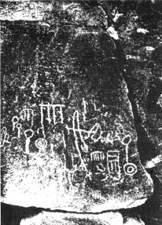
Kaya Yazıları, Nevada
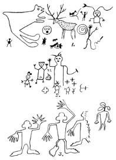
Üç yazı tipiyle uçurum sakinleri’nin işaret tabelaları
çatlayıp yer değiştirdiğine işaret ediyor. Başka yazılar ise toprak yükseldikten sonra yazıldıklarını açıkça gösteriyor.
Burada Kuzey Amerika’nın kaya yazıları ve resimlerinin detaylı bir açıklamasını yapmak mümkün değil. Kendimi, yalnızca iki önemli konuyu açıklayan birkaç örnekle sınırlandırmak zorundayım: Birincisi, bize bu medeniyetin yaklaşık tarihini verenler; ikincisiyse bize bu insanların kökenlerini ve Amerika’ya nereden ve nasıl geldiklerini anlatanlar.
Uçurum Sakinleri olarak adlandırılan tüm insanların gerçekten bu halka ait oldukları şüpheli. Şöyle ki, Uçurum Sakinleri’ne mâl edilmiş bazı yazılar, muhtemelen bambaşka bir halka yazılmıştı. Uçurum Sakinleri’nin Mu’dan geldikleri kesin, zira yol işaretlerinde kullandıkları resimlerin tümü Mu ile bağlantılı. Aslına bakılırsa, batışından önce ve sonraki hâlleriyle Mu hakkında göndermeler Uçurum Sakinleri’nin, sanatsal amaçlı çizilenler dışında, tüm kaya yazı ve resimlerinin içine işlemiş durumda. Buna ek olarak, anayurtta rağbet gören semboller sık kullanılmış.
Kaya yazıları arasında Maya dilinin dört farklı dalının kullanıldığını gördüğüm gibi, bu antik Amerikalıların farklı şekilde düzenlenmiş üç alfabe kullandıklarına dair kanıtlar da buldum.